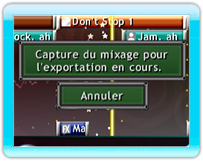
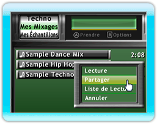
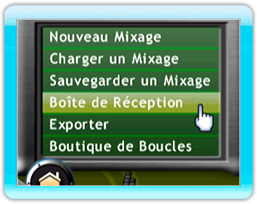

20 |
Exporter et Partager |
 |
|

Pour exporter un mixage, chargez-le sur le Séquenceur et, ensuite, appuyez sur l'icône du Menu de Mixage et sélectionnez Exporter. Il vous sera demandé de saisir le nom de votre mixage et votre adresse courriel (facultatif) afin de pouvoir recevoir un lien rapide pour télécharger votre mixage.
Une fois la piste téléchargée sur le serveur de Mix Superstar, vous recevrez aussi un code à saisir sur www.mixsuperstar.com pour pouvoir télécharger votre mixage.
WiiConnect24 Pour partager un mixage avec vos Amis Wii à travers WiiConnect24, ouvrez le Navigateur de Boucles et allez sur Mes mixages. Sélectionnez le mixage que vous voulez partager et, ensuite, appuyez sur le bouton B et sélectionnez Partager. Vous pouvez sélectionner à la fois jusqu'à huit (8) amis avec qui partager votre mixage. Après avoir fait votre choix, appuyez sur Envoyer. Si votre mixage contient d'autres mixages ou des échantillons que vous avez enregistrés, vous devrez aussi les envoyer séparément.
Lorsqu' un Ami Wii partage avec vous un mixage, l'icône du Menu de Mixage clignotera. Sélectionnez-le et appuyez sur l'option Vérifier la Boîte de Réception. Sur ce menu, vous pouvez importer des mixages en sélectionnant le fichier correspondant et en appuyant ensuite sur le bouton Importer situé sur la droite. Après l'importation, le fichier sera enlevé de la boîte de réception et placé sur la section Mes mixages du navigateur.
Veuillez prendre note: Tous vos Amis Wii figureront sur la liste; en revanche, seuls ceux qui auront téléchargé Mix Superstar sur leur console Wii pourront échanger de la musique à travers ce service. Nous vous recommandons d'envoyer d'abord un message à vos amis pour vérifier qu'ils aient bien téléchargé Mix Superstar. |
 |
 |
 |